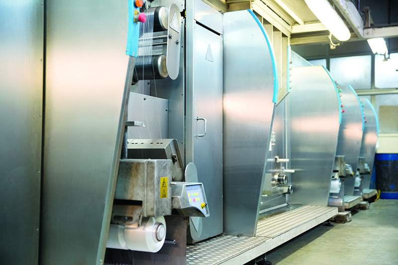
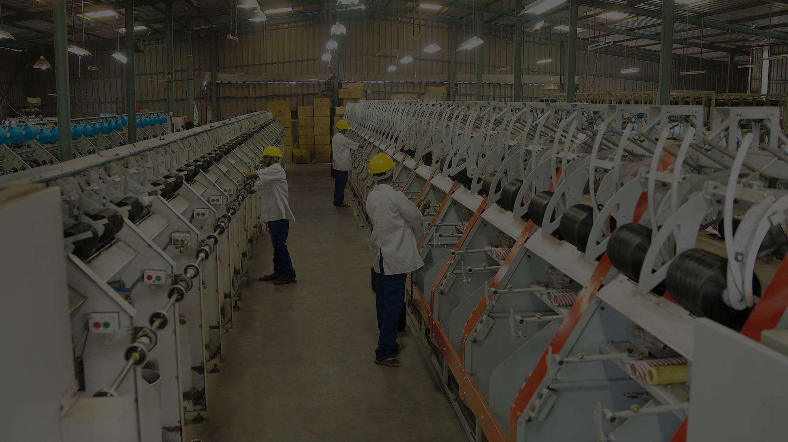

Daman Polythread Ltd. operates number of manufacturing facilities at various locations. The modern and state-of-the-art Infrastructure at all our facilities and factories makes them entirely conducive to production of the most excellent quality POLYPROPYLENE MULTIFILAMENT YARN and NARROW WOVEN FABRICS / WEBBINGS as we believe that infrastructure plays a vital role in manufacturing a product that stands apart in the PPMF Yarn Industry.
All our manufacturing facilities are equipped with the latest technology and highly automated European machinery with HMI. This technology is used to enhance accuracy, efficiency and
control to produce Polypropylene multifilament Yarns that are superior in quality, texture, color and strength. Our high-tech manufacturing units conduct every manufacturing process in-house including spinning, twisting, winding, texturizing, needle looms, winding of cones and more that are essential for the production of the various products manufactured by Daman Polythread Ltd.
After successfully completing the expansion in the year 2014 the capacity of POLYPROPYLENE MULTIFILAMENT YARN stands at 10000 tons/annum and NARROW WOVEN FABRICS / WEBBINGS at 2000 tons/annum.
Every PPMF Yarn & Industrial sewing thread manufacturing facility is equipped with the latest technology & highly automated European machinery with HMI (Human Interface). This technology is used to enhance accuracy, efficiency & control to produce Polypropylene multifilament Yarns that are superior in quality, texture, color & strength.